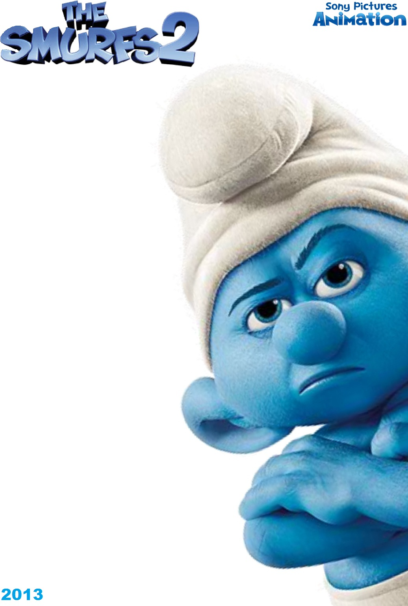

Os Smurfs 2. |
|
|  | Gênero. Animação |
| Sinopse. Sequência de "Os Smurfs" (2011). Gargamel (Hank Azaria) está, mais uma vez, atrás da essência dos protagonistas. Para atingir seu objetivo, ele cria os Naughties, seres pequeninos que são uma espécie de versão malvada dos Smurfs. Os heróis precisarão contar com a ajuda dos amigos humanos para salvar a Smurfette das garras dos inimigos. |
|
| Diretor. Raja Gosnell. | |
| Elenco. Neil Patrick Harris (Patrick Winslow), Hank Azaria (Gargamel), Jayma Mays (Grace Winslow), Brendan Gleeson (Victor Doyle). |
|
| Dia de Lançamento. 2 de Agosto de 2013. |
|
 
   |
|